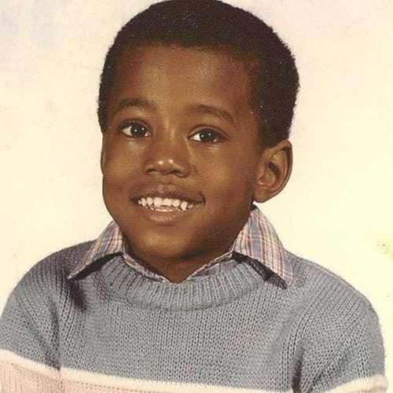
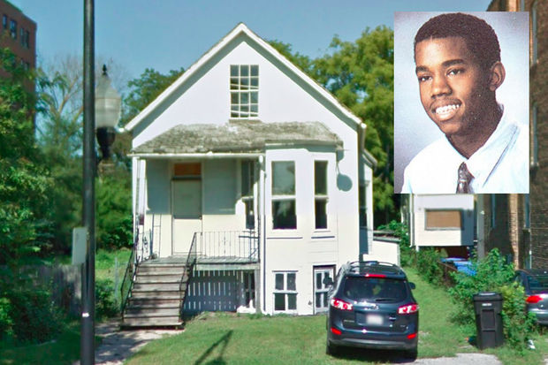
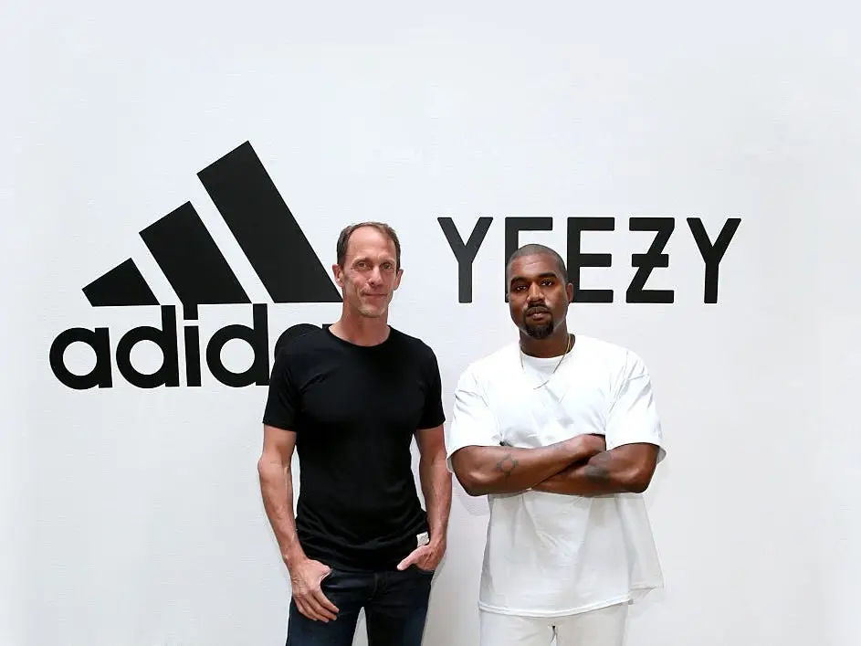

Childhood life of Kanye West
 𝐴 𝑙𝑜𝑜𝑘 𝑖𝑛𝑡𝑜 𝐾𝑎𝑛𝑦𝑒 𝑊𝑒𝑠𝑡 life 𝑡ℎ𝑟𝑜𝑢𝑔ℎ𝑜𝑢𝑡 𝑡ℎ𝑒 𝑦𝑒𝑎𝑟𝑠.
𝖪𝑎𝑛𝑦𝑒 𝑊𝑒𝑠𝑡 𝑤𝑎𝑠 𝑏𝑜𝑟𝑛 𝑖𝑛 𝐴𝑡𝑙𝑎𝑡𝑛𝑎, 𝐺𝑒𝑜𝑟𝑔𝑖𝑎 𝑜𝑛 𝐽𝑢𝑛𝑒 8𝑡ℎ 1977. 𝐾𝑎𝑛𝑦𝑒'𝑠 𝑝𝑎𝑟𝑒𝑛𝑡𝑠 𝑑𝑖𝑣𝑜𝑟𝑐𝑒𝑑 𝑤ℎ𝑒𝑛 ℎ𝑒 𝑤𝑎𝑠 3 𝑦𝑒𝑎𝑟𝑠 𝑜𝑙𝑑, ℎ𝑒 𝑚𝑜𝑣𝑒𝑑 𝑡𝑜 𝑆𝑜𝑢𝑡ℎ 𝑆𝑖𝑑𝑒 𝐶ℎ𝑖𝑐𝑎𝑔𝑜 𝑤𝑖𝑡ℎ ℎ𝑖𝑠 𝑚𝑜𝑡ℎ𝑒𝑟 𝐷𝑜𝑛𝑑𝑎 𝑊𝑒𝑠𝑡. 𝐷𝑜𝑛𝑑𝑎 𝑊𝑒𝑠𝑡 𝑛𝑜𝑡𝑖𝑐𝑒𝑑 𝑡ℎ𝑎𝑡 𝐾𝑎𝑛𝑦𝑒 𝑤𝑎𝑠 𝑔𝑟𝑜𝑤𝑖𝑛𝑔 𝑎 𝑝𝑎𝑠𝑠𝑖𝑜𝑛 𝑓𝑜𝑟 𝑑𝑟𝑎𝑤𝑖𝑛𝑔 𝑎𝑛𝑑 𝑚𝑢𝑠𝑖𝑐 𝑤ℎ𝑒𝑛 ℎ𝑒 𝑗𝑢𝑠𝑡 𝑒𝑛𝑡𝑒𝑟𝑒𝑑 𝑡ℎ𝑒 𝑡ℎ𝑖𝑟𝑑 𝑔𝑟𝑎𝑑𝑒 𝑖𝑡 𝑑𝑖𝑑𝑛'𝑡 𝑡𝑎𝑘𝑒 𝑙𝑜𝑛𝑔 𝑢𝑛𝑡𝑖𝑙 𝐾𝑎𝑛𝑦𝑒 𝑠𝑡𝑎𝑟𝑡𝑒𝑑 𝑡𝑜 𝑟𝑎𝑝 𝑖𝑛 𝑡ℎ𝑒 𝑡ℎ𝑖𝑟𝑑 𝑔𝑟𝑎𝑑𝑒 𝑎𝑛𝑑 𝑎𝑛𝑑 𝑠𝑡𝑎𝑟𝑡𝑒𝑑 𝑚𝑎𝑘𝑖𝑛𝑔 𝑚𝑢𝑠𝑖𝑐𝑎𝑙 𝑐𝑜𝑚𝑝𝑜𝑠𝑖𝑡𝑖𝑜𝑛𝑠 𝑖𝑛 𝑡ℎ𝑒 𝑠𝑒𝑣𝑒𝑛𝑡ℎ 𝑔𝑟𝑎𝑑𝑒 𝑎𝑛𝑑 𝑒𝑣𝑒𝑛𝑡𝑢𝑎𝑙𝑙𝑦 𝑠𝑡𝑎𝑟𝑡𝑒𝑑 𝑠𝑒𝑙𝑙𝑖𝑛𝑔 𝑡ℎ𝑒𝑠𝑒 𝑏𝑒𝑎𝑡𝑠 𝑡𝑜 𝑑𝑖𝑓𝑓𝑒𝑟𝑒𝑛𝑡 𝑎𝑟𝑡𝑖𝑠𝑡𝑠 𝑎𝑟𝑜𝑢𝑛𝑑 ℎ𝑖𝑚 𝑖𝑛 𝑡ℎ𝑒 𝐶ℎ𝑖𝑐𝑎𝑔𝑜 𝑎𝑟𝑒𝑎 𝑗𝑢𝑠𝑡 𝑎𝑡 𝑡ℎ𝑒 𝑎𝑔𝑒 𝑜𝑓 14 𝑦𝑒𝑎𝑟𝑠 𝑜𝑙𝑑.𝐾𝑎𝑛𝑦𝑒 𝑡ℎ𝑒𝑛 𝑝𝑢𝑟𝑠𝑢𝑎𝑑𝑒𝑑 ℎ𝑖𝑠 𝑚𝑜𝑡ℎ𝑒𝑟 𝑡𝑜 𝑝𝑎𝑦 𝑓𝑜𝑟 𝑡𝑖𝑚𝑒 𝑖𝑛 𝑎 𝑟𝑒𝑐𝑜𝑟𝑑𝑖𝑛𝑔 𝑠𝑡𝑢𝑑𝑖𝑜 𝑒𝑣𝑒𝑛 𝑡ℎ𝑜𝑢𝑔ℎ 𝑖𝑡 𝑤𝑎𝑠 𝑠𝑜 𝑒𝑥𝑝𝑒𝑛𝑠𝑖𝑣𝑒 𝑎𝑛𝑑 𝑤𝑖𝑡ℎ 𝑡ℎ𝑎𝑡 𝐾𝑎𝑛𝑦𝑒'𝑠 𝑜𝑛𝑙𝑦 𝑤𝑎𝑦 𝑜𝑓 𝑚𝑎𝑘𝑖𝑛𝑔 𝑚𝑢𝑠𝑖𝑐 𝑤𝑎𝑠 𝑖𝑛 ℎ𝑖𝑠 "𝑡𝑖𝑛𝑦 𝑙𝑖𝑡𝑡𝑙𝑒 𝑏𝑎𝑠𝑒𝑚𝑒𝑛𝑡 𝑠𝑡𝑢𝑑𝑖𝑜" 𝑤ℎ𝑒𝑟𝑒 𝑎 𝑚𝑖𝑐𝑟𝑜𝑝ℎ𝑜𝑛𝑒 ℎ𝑢𝑛𝑔 𝑓𝑟𝑜𝑚 𝑡ℎ𝑒 𝑐𝑒𝑖𝑙𝑖𝑛𝑔 𝑏𝑦 𝑎 𝑤𝑖𝑟𝑒 𝑐𝑙𝑜𝑡ℎ𝑒𝑠 ℎ𝑎𝑛𝑔𝑒𝑟. 𝐾𝑎𝑛𝑦𝑒 𝑑𝑖𝑑𝑛'𝑡 ℎ𝑎𝑣𝑒 𝑖𝑡 𝑒𝑎𝑠𝑦 𝑎𝑠 𝑎 𝑘𝑖𝑑 ℎ𝑒 𝑤𝑎𝑠 𝑖𝑛 𝑎 𝑚𝑖𝑑𝑑𝑙𝑒 𝑐𝑙𝑎𝑠𝑠 𝑒𝑛𝑣𝑖𝑟𝑜𝑚𝑒𝑛𝑡 𝑎𝑛𝑑 𝑎𝑡𝑡𝑒𝑑𝑛𝑒𝑑 𝑃𝑜𝑙𝑎𝑟𝑖𝑠 𝑆𝑐ℎ𝑜𝑜𝑙 𝑓𝑜𝑟 𝐼𝑛𝑑𝑖𝑣𝑖𝑢𝑎𝑙 𝐸𝑑𝑢𝑐𝑎𝑡𝑖𝑜𝑛 𝑖𝑛 𝑠𝑢𝑏𝑢𝑟𝑏𝑎𝑛 𝑂𝑎𝑘 𝐿𝑎𝑤𝑛, 𝐼𝑙𝑙𝑖𝑛𝑖𝑜𝑠. 𝐴𝑡 𝑡ℎ𝑒 𝑎𝑔𝑒 𝑜𝑓 10 𝑦𝑒𝑎𝑟𝑠 𝑜𝑙𝑑 𝐾𝑎𝑛𝑦𝑒 𝑎𝑛𝑑 ℎ𝑖𝑠 𝑚𝑜𝑡ℎ𝑒𝑟 𝑚𝑜𝑣𝑒𝑑 𝑡𝑜 𝑁𝑎𝑛𝑗𝑖𝑛𝑔 𝐶ℎ𝑖𝑛𝑎.
Kanye West College Dropout

𝐾𝑎𝑛𝑦𝑒 𝑊𝑒𝑠𝑡 𝑤𝑎𝑠𝑛'𝑡 𝑎 𝑟𝑎𝑝𝑝𝑒𝑟 𝑎𝑡 𝑡ℎ𝑒 𝑡𝑖𝑚𝑒 ℎ𝑒 𝑤𝑎𝑠 𝑝𝑟𝑜𝑑𝑢𝑐𝑖𝑛𝑔 𝑏𝑒𝑎𝑡𝑠 𝑓𝑜𝑟 𝑠𝑡𝑎𝑟𝑠 𝑏𝑢𝑡 𝑖𝑛 𝑑𝑜𝑖𝑛𝑔 𝑠𝑜 𝑤𝑎𝑠 ℎ𝑜𝑝𝑖𝑛𝑔 𝑓𝑜𝑟 ℎ𝑖𝑠 𝑓𝑖𝑟𝑠𝑡 𝑎𝑙𝑏𝑢𝑚 𝑟𝑒𝑙𝑒𝑎𝑠𝑒. 𝐸𝑣𝑒𝑟𝑦𝑡ℎ𝑖𝑛𝑔 𝑤𝑎𝑠 𝑙𝑜𝑜𝑘𝑖𝑛𝑔 𝑔𝑜𝑜𝑑 𝑏𝑢𝑡 𝑜𝑛 𝑜𝑛𝑒 𝑐𝑜𝑙𝑑 𝑛𝑖𝑔ℎ𝑡 𝑖𝑛 𝑂𝑐𝑡𝑜𝑏𝑒𝑟 𝑓𝑟𝑜𝑚 𝑡ℎ𝑒 𝑤𝑎𝑦 ℎ𝑜𝑚𝑒 𝑓𝑟𝑜𝑚 𝑎 𝑟𝑒𝑐𝑜𝑟𝑑𝑖𝑛𝑔 𝑠𝑒𝑠𝑠𝑖𝑜𝑛 𝑖𝑛 𝐿𝑜𝑠 𝐴𝑛𝑔𝑒𝑙𝑠 𝑓𝑒𝑙𝑙 𝑎𝑠𝑙𝑒𝑒𝑝 𝑎𝑡 𝑡ℎ𝑒 𝑤ℎ𝑒𝑒𝑙. 𝐾𝑎𝑛𝑦𝑒 𝑤𝑎𝑠 𝑖𝑛𝑣𝑜𝑙𝑣𝑒𝑑 𝑖𝑛 𝑎 ℎ𝑒𝑎𝑑 𝑜𝑛 𝑐𝑎𝑟 𝑐𝑜𝑙𝑙𝑖𝑠𝑖𝑜𝑛 𝑡ℎ𝑎𝑡 𝑙𝑒𝑓𝑡 ℎ𝑖𝑚 𝑤𝑖𝑡ℎ 𝑎 𝑓𝑟𝑎𝑐𝑡𝑢𝑟𝑒𝑑 𝑗𝑎𝑤 𝑎𝑛𝑑 𝑏𝑟𝑜𝑘𝑒𝑛 𝑓𝑎𝑐𝑒 𝑡ℎ𝑖𝑠 𝑤𝑜𝑢𝑙𝑑 𝑐ℎ𝑎𝑛𝑔𝑒 ℎ𝑖𝑠 𝑓𝑢𝑡𝑢𝑟𝑒 𝑓𝑜𝑟𝑒𝑣𝑒𝑟. 𝐾𝑎𝑛𝑦𝑒 𝑊𝑒𝑠𝑡 𝑠𝑡𝑖𝑙𝑙 𝑤𝑎𝑛𝑡𝑒𝑑 ℎ𝑖𝑠 𝑎𝑙𝑏𝑢𝑚 𝑡𝑜 𝑟𝑒𝑙𝑒𝑎𝑠𝑒 𝑏𝑢𝑡 𝑚𝑎𝑑𝑒 𝑖𝑡 ℎ𝑎𝑟𝑑 𝑓𝑜𝑟 ℎ𝑖𝑚 𝑡𝑜 𝑚𝑎𝑘𝑒 𝑠𝑜𝑛𝑔𝑠 𝑤𝑖𝑡ℎ ℎ𝑖𝑠 𝑗𝑎𝑤 𝑤𝑖𝑟𝑒𝑑 𝑠ℎ𝑢𝑡 𝑡ℎ𝑖𝑠 𝑖𝑠 𝑤ℎ𝑒𝑛 ℎ𝑒 𝑚𝑎𝑑𝑒 ℎ𝑖𝑠 𝑓𝑖𝑟𝑠𝑡 𝑠𝑜𝑛𝑔 𝑇ℎ𝑟𝑜𝑢𝑔ℎ 𝑡ℎ𝑒 𝑤𝑖𝑟𝑒 𝑡ℎ𝑖𝑠 𝑤𝑜𝑢𝑙𝑑 𝑏𝑒 𝑡ℎ𝑒 𝑓𝑖𝑟𝑠𝑡 𝑡𝑟𝑎𝑐𝑘 𝑜𝑓 𝑠𝑒𝑣𝑒𝑟𝑎𝑙 𝑠𝑖𝑛𝑔𝑙𝑒𝑠 𝑜𝑛 𝑡ℎ𝑒 𝐶𝑜𝑙𝑙𝑒𝑔𝑒 𝐷𝑟𝑜𝑝𝑜𝑢𝑡. 𝑇ℎ𝑒 𝐶𝑜𝑙𝑙𝑒𝑔𝑒 𝐷𝑟𝑜𝑝𝑜𝑢𝑡 𝑤𝑎𝑠 𝑟𝑒𝑙𝑒𝑎𝑠𝑒𝑑 𝑖𝑛 2004 𝑡ℎ𝑎𝑡 𝑤𝑒𝑛𝑡 𝑚𝑙𝑡𝑖𝑝𝑙𝑎𝑡𝑖𝑛𝑢𝑚 𝑠𝑒𝑙𝑙𝑖𝑛𝑔 2.6 𝑚𝑖𝑙𝑙𝑖𝑜𝑛 𝑐𝑜𝑝𝑖𝑒𝑠.
Kanye West adult life and accomplishments.
Kanye West now today is the richest rapper but lets go back and look at how all this happened. Kanye West signed his first shoe deal with the company Nike he released the shoe we all know till this day as the "yeezy". This wouldn't be a long term thing until Kanye and Nike struck a disagreement Kanye would then take things into his own hands and sign a deal with Adidas.